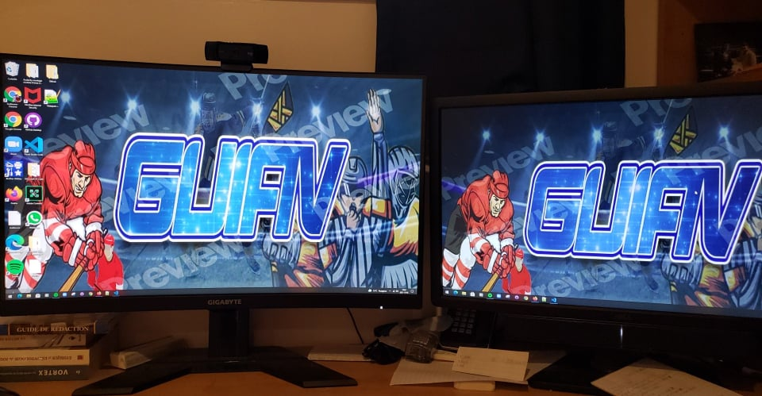

Devenir gamer compétitif
 Guillaume Asselin-Verreault (moi-même) est à quelques jours de compétionner dans le plus gros tournoi de NHL (GWC) en Amérique du Nord. Photo : Etienne Ranger, Le Droit
Guillaume Asselin-Verreault (moi-même) est à quelques jours de compétionner dans le plus gros tournoi de NHL (GWC) en Amérique du Nord. Photo : Etienne Ranger, Le Droit
Un simple loisir
J'ai commencé à jouer au populaire jeu NHL d'EA Sports en 2015. Le hockey étant ma passion, il allait de soi que ce soit mon jeu de prédilection. Rapidement, je me suis mis à jouer de façon régulière. J'étais loin de me douter que ce qui était alors un passe-temps allait m'ouvrir des portes qui m'étaient encore à ce jour inconnues.
Entre les éditions de NHL15 à NHL19, je jouais sur mes heures libres, consacrant beaucoup de temps à mes études et à mes relations. C'est durant la pandémie de COVID-19 que je me suis réellement rendu compte que j'avais un talent hors-pair à ce jeu. J'ai donc décidé de consacrer un peu plus d'heures, ce qui m'était possible de faire au confinement lié à la situation pandémique.
J'étais toutefois loin de me douter que cette décision, d'accorder beaucoup plus d'heures à ce loisir, allait devenir assez payante.
Début d'une «carrière pro»
C'est donc en jouant à NHL20 que le rêve a commencé. Petit à petit, j'ai commencé à jouer dans plusieurs tournois pour des prix en argent, mes débuts sur la scène compétitive. Aucun gain, mais une expérience plaisante qui m'a procuré l'envie de continuer.
Pour NHL21, j'ai enfin fait le grand saut sur un moniteur de «gaming», la meilleure décision de ma vie de «gamer». J'ai connu du succès toute l'année sur la scène compétitive, en terminant notamment dans le carré d'as du tournoi organisé par l'organisation «Esports» des Panthers de la Floride, puis dans le top 16 de celui organisé par les Canadiens de Montréal.

Voici l'endroit où je joue à NHL. Photo : Guillaume Asselin-Verreault
Arrive enfin en mars le plus gros tournoi de l'année, le Gaming World Championship (GWC) organisé par la LNH elle-même et avec près de 100 000$ US en argent à gagner.
J'ai réussi à me qualifier parmi les 256 meilleurs joueurs en Amérique du Nord pour la phase principale du tournoi.
 Guillaume Asselin-Verreault s'apprête à affronter Gabriel Boudreault pour représenter les Canadiens de Montréal dans la phase finale du GWC. Photo : NHL
Guillaume Asselin-Verreault s'apprête à affronter Gabriel Boudreault pour représenter les Canadiens de Montréal dans la phase finale du GWC. Photo : NHL
De l'argent en jeu
Dans la ronde des 64 du GWC, il y avait déjà un montant en argent à l'enjeu. Il s'agissait de 1000$ US. En gagnant ce match, ce qui s'est produit, j'ai eu accès au tableau principale du tournoi ou les 32 meilleurs joueurs en Amérique, chacun représentant l'une des 32 équipes de la LNH, allaient se disputer 25 000$ US, le prix remis au grand vainqueur et meilleur joueur en Amérique.
Mon parcours de rêve a pris fin en ronde des 32, la première ronde la phase finale du tournoi, ce qui veut dire qu'officiellement je suis parmi les 32 meilleurs joueurs du populaire jeu NHL en Amérique du Nord, un exploit que je n'aurais jamais pensé être possible un jour.
Au final, en comptant tous les tournois et communément appelées «money games», je peux évaluer mes gains totaux à environ 3000$ US en 2021, en jouant à NHL. Au total, mes gains totalisent environ 4000$ US depuis que je joue compétitivement. Il va de soi de dire que 2021 a été ma meilleure année jusqu'à présent. Pas si mal pour un jeune homme de Gatineau, qui travaille en journalisme, qui étudie à temps plein et joue à NHL à titre de passe-temps.
Vidéo : Sportsnet
©2021 Guillaume Asselin-Verreault |
gasse084@uottawa.ca